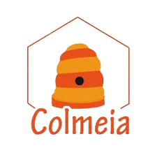

Gratuidade
Não há cobrança de matrícula, mensalidade ou taxas. Materiais pedagógicos, listas de exercícios e demais recursos também são gratuitos.

Projeto de extensão da Unicamp · Gratuito
O Colmeia é um espaço onde o acesso à universidade deixa de ser apenas um sonho e passa a ser uma possibilidade concreta. A preparação é gratuita e voltada a estudantes da rede pública de Limeira.
Quem somos
O Cursinho Pré-Vestibular Colmeia é um projeto de extensão da Universidade Estadual de Campinas (Unicamp), desenvolvido em Limeira. Oferecemos preparação pré-vestibular gratuita e de qualidade, destinada especialmente a estudantes oriundos da rede pública de ensino.
Mais do que preparar para os vestibulares, o Colmeia busca construir um ambiente de acolhimento, aprendizado e transformação social, acreditando que a educação é um direito e deve estar ao alcance de todos.
Leia nossa história completaO que nos define
Não há cobrança de matrícula, mensalidade ou taxas. Materiais pedagógicos, listas de exercícios e demais recursos também são gratuitos.
O Colmeia é uma iniciativa de extensão universitária, que aproxima a universidade da comunidade.
Mais do que um preparatório, é um projeto de democratização do acesso ao ensino superior e de redução das desigualdades educacionais.
Dúvidas frequentes
Estudantes já formados no ensino médio e estudantes que ainda cursam o ensino médio da rede pública, especialmente os do terceiro ano. O cursinho prioriza pessoas que enfrentam barreiras socioeconômicas no acesso à preparação para os vestibulares.
O cursinho é totalmente gratuito: não há cobrança de matrícula, mensalidade ou taxas, e os materiais também são oferecidos sem custo.
As inscrições são feitas por meio de processos seletivos divulgados periodicamente nos canais oficiais do Colmeia, com período de inscrição, critérios, documentação e etapas da seleção. Acompanhe nosso Instagram para não perder os prazos.
As aulas são de segunda a sexta, à tarde (13h40 às 17h) ou à noite (18h às 22h20). Veja todas as turmas na página Funcionamento.
Sim. Materiais pedagógicos, listas de exercícios e demais recursos são gratuitos, e simulados e materiais complementares ficam disponíveis na plataforma digital do cursinho.
Sim. Os simulados acontecem até 2 vezes por mês, aos sábados, e há professores de redação que preparam os alunos para os gêneros cobrados pela Unicamp e para a redação do Enem.
Aprender, praticar, avançar
Turmas de extensivo, semi-extensivo e intensivo, de segunda a sexta, organizadas conforme o calendário pedagógico.
Ver turmas e horáriosAté 2 vezes por mês, aos sábados, no formato da Unicamp, Unesp, USP e Enem, para treinar estratégia e administração do tempo.
Saiba mais sobre os simuladosProfessores de redação preparam você para os gêneros da Unicamp e para a dissertativo-argumentativa do Enem.
Saiba mais sobre a redaçãoVozes da comunidade
“O Colmeia não foi apenas o lugar onde estudei, foi um verdadeiro porto seguro durante toda essa jornada. Encontrei professores que escutam de verdade, monitores com uma paciência enorme para lidar com nossos surtos e uma energia que me lembrava, diariamente, de que eu era capaz.”
“Graças às orientações deles, tivemos informações sobre os processos de bolsas, como se constituem, e isso foi crucial durante a minha graduação já que fui bolsista e isso permitiu minha permanência na universidade.”
“Mais do que contribuir para minha aprovação no vestibular, o cursinho foi parte fundamental da minha formação como pessoa, cidadã e profissional.”
Estamos em Limeira
Endereço: R. Francisco Bisca, 121 - Jardim Morro Azul, Limeira - SP, 13484-487 (Centro Comunitário Morro Azul)
Secretaria: atendimento das 13h às 20h
Fale conosco